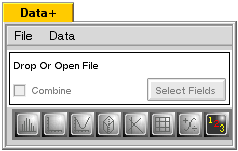
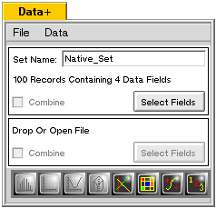
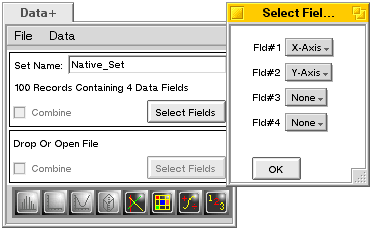
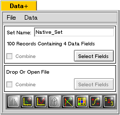

DataPlus Data Manager Console
The data manager is opened by double-clicking on the DataPlus icon. This opens a blank manager. It may also be opened by dropping a data file on the icon. See below for the types of data files which work with DataPlus. If opened without a file, the application will show the "blank" window:
How DataPlus translates a text file:
When a text file or a selection of text is dropped onto the view, DataPlus will first try to determine how the data is delineated. If it finds tabs in the first line, it assumes tab-delineated data. If it finds commas, then comma-delineation is assumed. If neither is found, then white-space delineation is used. If the first line of text contains non-numerical data, the fields are used as column headers for the following data. The first column containing non-numeric data is assumed to be a header title for the row.
NOTE that there is a row of icons at the bottom of the window. Initially they are all dimmed except for the last one, which is the Direct Entry Tool, which can be used to build data entry sheets. The other icons will remain dimmed until there is data available for analysis.
NOTE at this point, three more icons are enabled, the the Multiple Regression tool, the Matrix Sorting tool and the Formula tool, the latter two used for modifying the data sets.
Analyzing the Data:
In order to enable data analysis, it is necessary to choose one or more data fields. If the "Select Fields" button is clicked, a selection dialog like that below will be brought up. Each data field can be set to either an X,Y or Z axis. The default is "None". There may be only one of each axis chosen, and they must be selected in X,Y,Z order. The type of data analysis enabled will depend upon how many axes are chosen. Choosing a single "X" axis enables the Distribution Analysis choosing both an "X" and "Y" axis enables both the Linear Regression analysis and Polynomial Regression analysis. If all three axes are selected, the 3-D Plot is enabled.
At this time, choose the "X" and "Y" axes as shown.

Click on the "OK" button to apply the selection. The panel should now look like this:

Click on the Linear Regression icon (first enabled icon from left) to analyze the data using that tool.
NOTE! At this time, the only tools available are for Distribution Analysis and Linear Regression Analysis. More will be added as they are written.